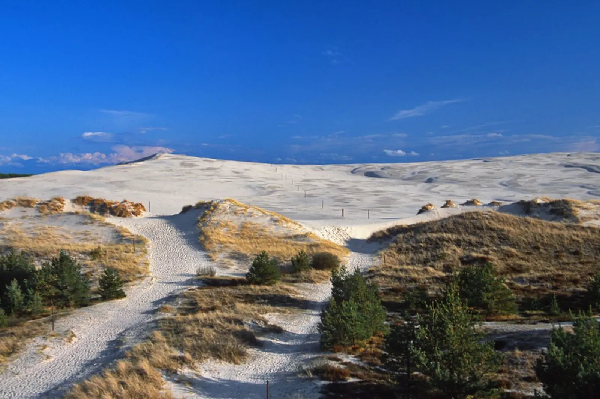

Wonderful for unwinding when you just want to listen to the waves without a complicated schedule. Slow travel through Łeba — the town of shifting dunes.
Why Łeba, differently
Łeba is a place where the land constantly battles wind and water. Słowiński National Park, with its shifting dunes, is one of the most surreal landscapes in Poland — white mountains of sand that slowly move toward the forest, burying trees and lakes. This is one of the most interesting natural phenomena in Europe.
Slow travel through Łeba is a celebration of emptiness. A hike through the dunes teaches humility — standing at the top and looking at the endless blue of the Baltic on one side and the green of the forest on the other, you can feel everyday noise disappearing, replaced by pure, salty wind. This is a land where you don't have to do anything — just be and breathe.
What to see
Łeba lies between Lakes Łebsko and Sarbsko, by Słowiński National Park. Two to three days are best to visit.
Shifting dunes and Słowiński NP
- Łącka Dune — the highest dune in Słowiński NP (42 m), with a viewpoint over the Baltic and Lake Łebsko. Ascent takes ~1 hour, the route is demanding (sand) but rewards with views.
- Czołpińska Dune — a smaller dune in the western part of the park. Worth a walk and smaller crowds.
- Słowiński National Park — a park covering shifting dunes, coastal lakes (Łebsko and Gardno) and coastal pine forests. The park's symbol is the shifting sand, which moves a few metres per year.
- Czołpino Lighthouse — the tallest lighthouse on the Polish coast (75 m), with a viewpoint over the entire park. Worth climbing at sunset.
Beaches and lakes
- Łeba Beach — wide, sandy, lifeguarded in season. Look for less crowded sections — east of the centre, towards Rąbka.
- Lake Łebsko — the largest coastal lake in Poland (~70 km²), separated from the sea by a belt of dunes. Worth sitting by it, especially at dawn when mists rise over the water.
- Lake Sarbsko — a smaller lake east of Łeba. Worth a walk and birdwatching.
- Łeba-Łebsko Canal — a canal connecting Lake Łebsko with the sea, with a harbour and marina. Worth a walk.
Łeba and surroundings
- Łeba — a town with a harbour, promenade and numerous guesthouses. Worth seeing shifting sands at micro scale — on the beach, where water reveals sand and creates small moving forms.
- Rąbka — a settlement in Słowiński NP, with a viewpoint over the dunes. Worth it for lesser-known views.
- Wicko — a village with a 14th-century church, a former Slavic settlement. Worth it for history.
- Kluki — a village in the Smołdzino commune, with the Museum of the Slovincian Village. Worth it for understanding the culture of the Slovincians, former inhabitants of these lands.
- Gardno — the second coastal lake in Słowiński NP, smaller than Łebsko, but also worth seeing.
Lesser-known corners
- Nature trail in Słowiński NP — an educational trail in the park, leading through various habitats. Good for families with children.
- Wild beaches in the area — lesser-known beaches east and west of Łeba, without infrastructure and crowds. Worth it for those who seek solitude.
- Fishing harbour in Łeba — cutters, nets, fishermen at work. Worth seeing in the morning when they return from fishing.
- Bikes and cycling paths — several cycling paths around Łeba. Rent a bike and explore the area.
When to go
- May and June — the best time for slow travel. Fewer tourists, long days, beaches almost empty. Weather can be capricious, but evenings stay light until 10 p.m.
- July and August — peak season. Łeba crowded, prices high, but all attractions open. Come on a weekday.
- September — second best. Warm sea, fewer crowds, autumn colours over the dunes.
- October and November — end of the season, but the town is quiet and beautiful. Worth it for those who seek solitude.
- Winter — Łeba in winter can be harsh, but empty. Worth it for those who want to see the dunes under snow.
Getting there
- By car: ~1.5 hours from Gdańsk (DW214), ~40 minutes from Słupsk (DW214). In season, the road to Łeba can be crowded.
- By train: station in Łeba, with connections from Gdynia (~2 hours), Słupsk (~1 hour). Seasonal services from other cities.
- By bus: PKS and private operators from Gdańsk, Gdynia, Słupsk.
Within Łeba, the centre is compact and most sights are within walking distance. To reach Słowiński NP, take a bike or bus.
How much time you need
A weekend (2 days) is the minimum — dunes, beach, a walk around Łeba.
Three days is realistic for a first visit. One day for the dunes, one for the beach and Lake Łebsko, one for the surroundings (Kluki, Gardno).
A week lets you explore the whole region — Łeba, Słowiński NP, surroundings (Smołdzino, Rowokół) and spend a few days by the sea without haste.
What to eat and where to sleep
- Baltic fish — herring, flounder, cod, smoked salmon. Best in small fry shops at the harbour.
- Herring in oil — a coastal cuisine classic, available at every fish shop.
- Smoked eel — a regional delicacy, available at smokehouses in Łeba and surroundings.
- Kashubian cuisine — in the region, try ruchanki, kiszka z kaszy i krwi.
- Beer from local breweries — several craft breweries in the region.
- Coffee and cake — Łeba has several good cafés, ideal for a break.
Accommodation: Łeba (largest choice, but expensive), Rąbka (quiet, near the park), Wicko and Kluki (agritourism, silence), surroundings of Łeba (campsites, cheaper). Book ahead in summer season (2–3 weeks).
Practical tips
- Bookings — buy Słowiński NP tickets online or at entry kiosks. In season (July–August) queues at ticket offices are long.
- Weather — by the sea, it changes quickly. Even in July, bring a windproof jacket and hat.
- Dunes — the route through the dunes is demanding (sand, no shade). Bring plenty of water, a hat and sunscreen.
- Shoes — sandals or sports shoes are best for the dunes. Flip-flops are not a good choice (sand heats up).
- Crowds — dunes and beach are crowded in season. Go early in the morning or late afternoon.
- Parking — Łeba has a paid parking zone, spaces are hard to find. Large car parks at the entrance to Słowiński NP.
- Signal — good in Łeba, weaker on the dunes and in the park.